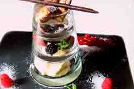
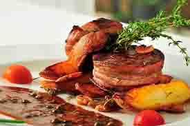
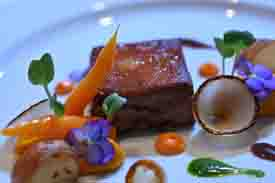
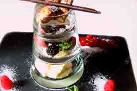
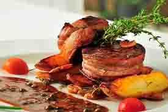
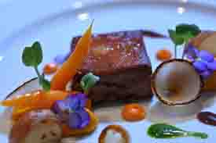

Más que solo cocina
¡En AltaCocina, nos enorgullecemos de ofrecer una experiencia gastronómica inolvidable. Nuestro menú está
cuidadosamente diseñado para deleitar tus sentidos, combinando ingredientes frescos y de alta calidad
con técnicas culinarias innovadoras.
Nuestra Filosofía
Creemos que la comida es mucho más que una necesidad básica; es una forma de arte y una expresión
cultural. Por eso, nos esforzamos por crear platos que no solo sean deliciosos, sino que también cuenten
una historia. Desde el primer bocado hasta el último sorbo, queremos que cada visita a [Nombre del
Restaurante] sea una celebración de sabores y tradiciones.
Menú de Temporada
Nuestro equipo de chefs talentosos trabaja incansablemente para incorporar ingredientes de temporada en
nuestro menú, asegurando que cada plato esté lleno de sabor y frescura. Ya sea que estés buscando un
almuerzo ligero, una cena romántica o una celebración especial, encontrarás algo que te encantará.
Ambiente Acogedor
El ambiente de En AltaCocina está diseñado para ofrecerte un refugio tranquilo y acogedor del
bullicio de la vida diaria. Con una decoración elegante y un servicio excepcional, te invitamos a
relajarte y disfrutar de tu comida en un entorno que es tan hermoso como la comida que servimos.
Eventos Especiales
Nos encanta ser parte de tus momentos especiales. Ya sea una cena íntima, una reunión familiar o un
evento corporativo, estamos aquí para hacer de tu ocasión algo verdaderamente memorable. Consulta
nuestro calendario de eventos y únete a nosotros para noches temáticas, catas de vino y más.
 





Wok de vegetales
El Wok de Vegetales es una auténtica obra maestra culinaria que deleita tanto a los paladares más exigentes como a aquellos que buscan una opción saludable y reconfortante. Este plato, con su explosión de colores y sabores, es un tributo a la frescura y la versatilidad de los ingredientes vegetales. Desde el primer bocado, te transporta a un viaje gastronómico lleno de texturas crujientes y aromas tentadores. La combinación de vegetales frescos cuidadosamente seleccionados, cocinados al punto justo para mantener su vitalidad y sabor, crea una sinfonía de sabores en cada bocado. Los pimientos rojos y verdes aportan un toque dulce y jugoso, mientras que las zanahorias y los champiñones añaden una nota terrosa y satisfactoria. Lo que realmente eleva este plato a la categoría de delicia gourmet es la habilidad del chef para sazonar los vegetales con una mezcla de especias y salsas que realzan su sabor sin opacarlo. El toque final de salsa de soja y jengibre fresco agrega una profundidad de sabor irresistible, creando una experiencia culinaria que deja una impresión perdurable en el paladar. En resumen, el Wok de Vegetales es mucho más que un simple plato vegetariano; es una obra de arte comestible que demuestra que la comida saludable puede ser igualmente exquisita y satisfactoria para el alma.
Canastitas de atún
Las Canastitas de Atún son una exquisita delicia que combina la frescura del mar con la calidez reconfortante de una masa delicadamente horneada. Este plato es una verdadera joya gastronómica que cautiva con su presentación elegante y su sabor inolvidable. Cada bocado de estas canastitas es una experiencia sensorial única. La mezcla de atún fresco con cebolla picada y un toque de mayonesa cremosa crea un relleno jugoso y sabroso que se funde en la boca con cada mordisco. La masa, dorada y crujiente en el exterior, pero tierna y suave en el interior, proporciona el equilibrio perfecto para el relleno, agregando una textura irresistible a cada bocado. Lo que realmente distingue a estas Canastitas de Atún es la atención al detalle en su preparación. Cada pieza se elabora con cuidado y precisión, asegurando que cada una sea una pequeña obra maestra culinaria. El resultado es un plato que no solo deleita el paladar, sino que también brinda una sensación de satisfacción y confort con cada bocado. En resumen, las Canastitas de Atún son un verdadero placer para los sentidos, una muestra del arte culinario en su máxima expresión. Perfectas como aperitivo o como plato principal, estas delicias marinas seguramente se convertirán en un favorito de todos los amantes de la buena comida.